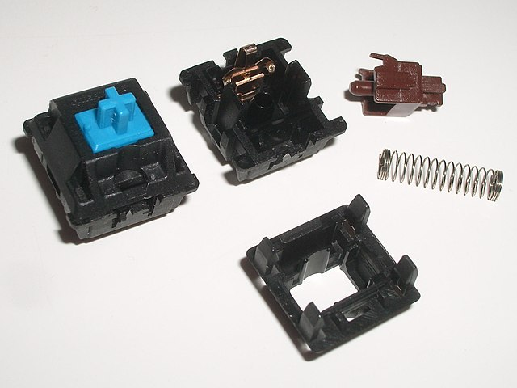

Mehaničke tipkovnice
Mehaničke tipkovnice su tipkovnice kod kojih svaka tipka ima zaseban mehanički prekidač ('switch'). Prekidač se sastoji od baze, opruge i drške.
Razlikujemo tri vrste prekidača:
- Linearni s konzistentnim otporom
- Taktilni s nečujnim udarcem ('bump')
- Taktilni s zvučnim 'klikom'
Razina na kojoj prekidač registrira pritisak ovisi o tvrdoći opruge te je to još jedan od faktora pri odabiru mehaničke tipkovnice.

Prekidač mehaničke tipkovnice